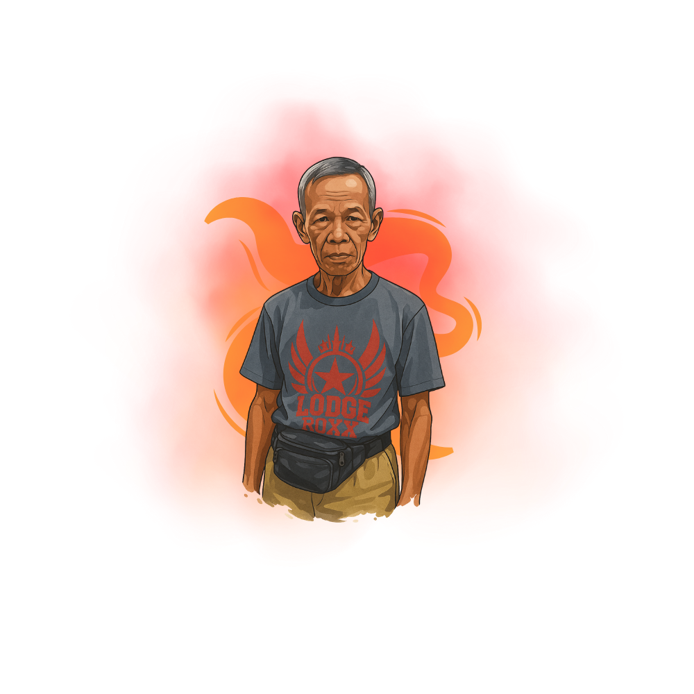
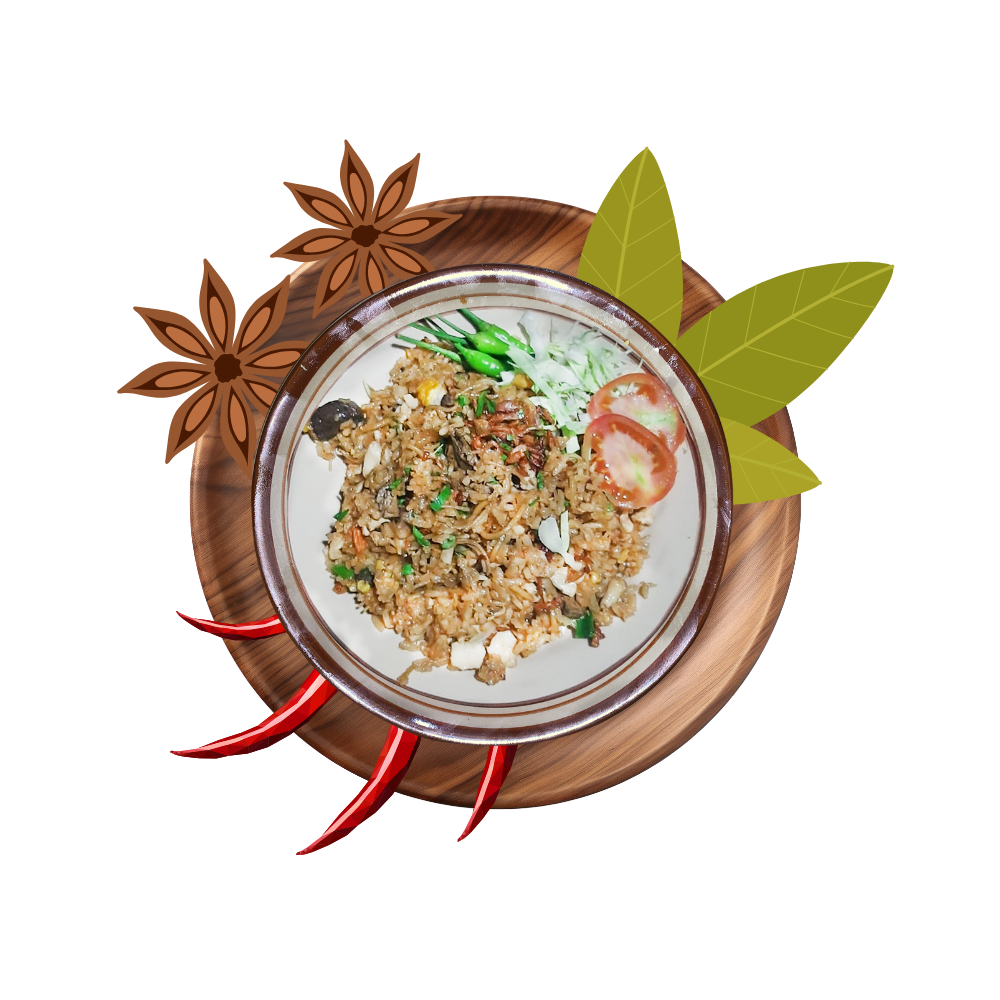
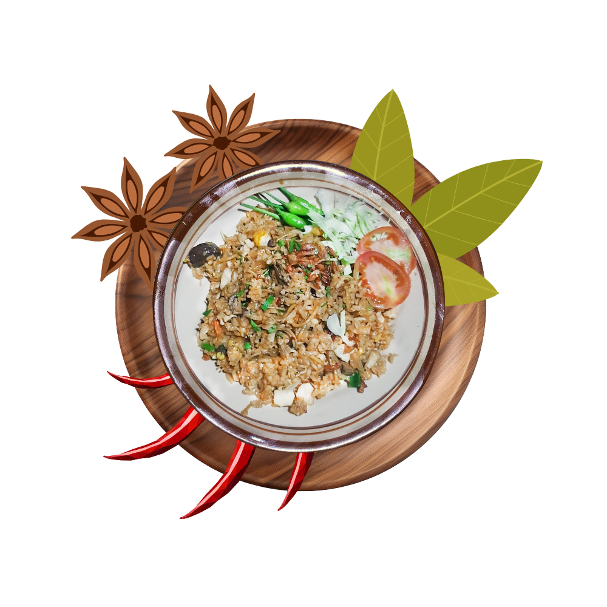
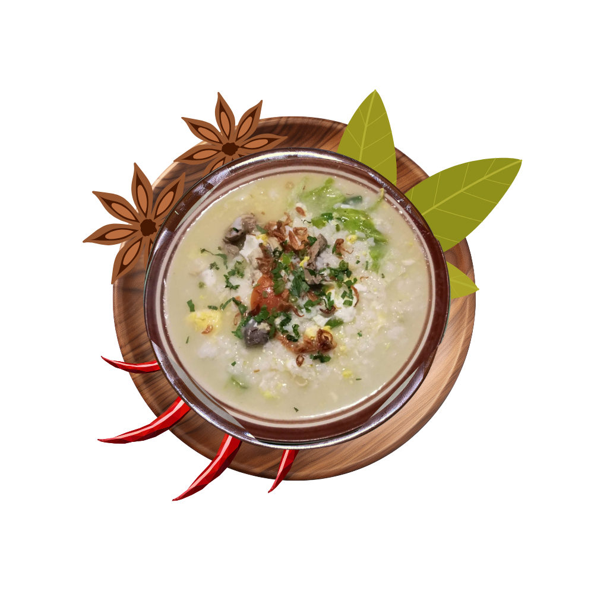
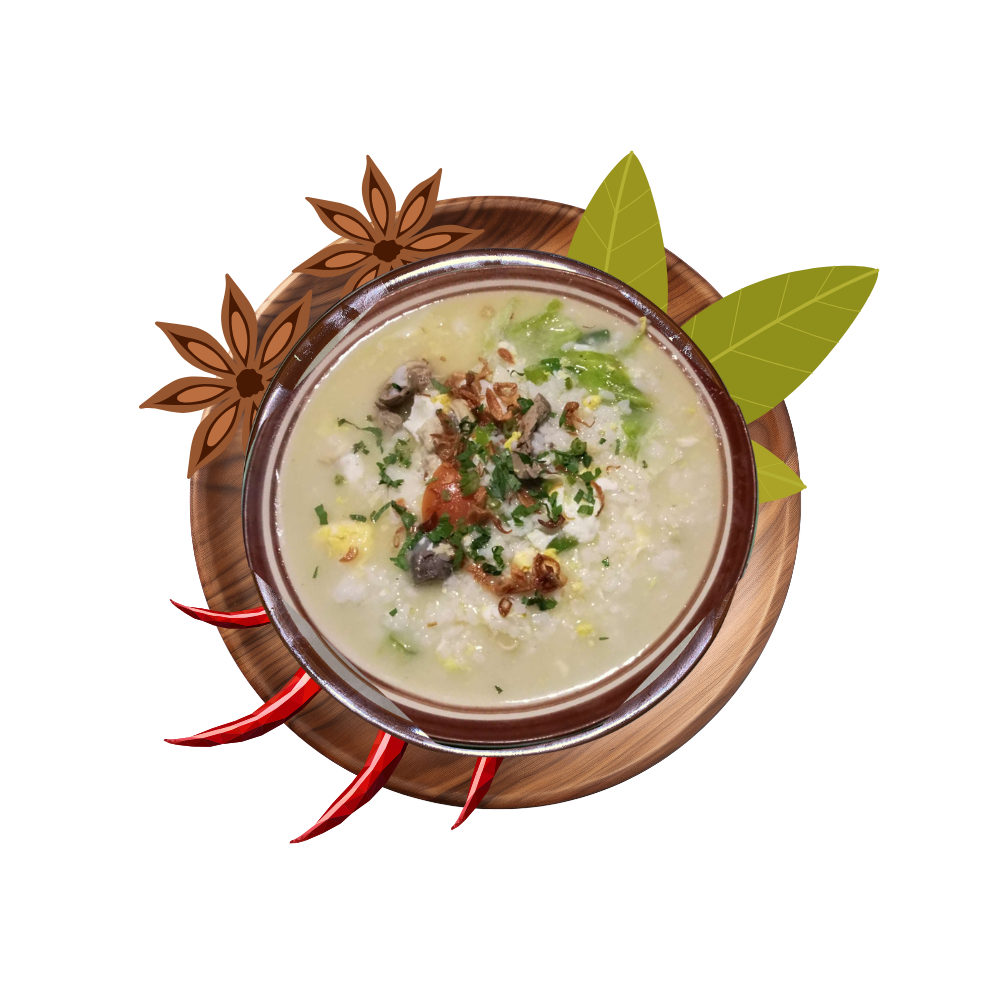

Sejarah Bakmi Pak Sandiyo Legendaris
Bakmi Pak Sandiyo Legendaris berdiri sejak tahun 1995, bermula dari sebuah dapur sederhana di daerah Paker, Bantul, Yogyakarta. Pak Sandiyo, sosok yang dikenal ramah dan penuh semangat, meracik sendiri resep bakmi dengan perpaduan rempah-rempah pilihan yang ia pelajari dari keluarganya. Dengan hanya bermodalkan dapur kecil dan tempat makan yang kecil, ia mulai berjualan setiap malam, menawarkan cita rasa khas bakmi Jawa terutama bakmi godok dan bakmi goreng yang kaya akan rasa dan kehangatan. Mi letek yang digunakan adalah mi tradisional yang memiliki tekstur khas dan menjadi ciri utama dari sajian beliau. Seiring waktu, rasa autentik dan konsistensi dalam menjaga kualitas membuat nama Bakmi Pak Sandiyo semakin dikenal, tidak hanya oleh warga sekitar, tetapi juga oleh para pecinta kuliner dari luar kota. Kini, warung yang dulunya kecil dan sederhana telah menjadi salah satu tujuan kuliner malam yang legendaris di Bantul, tetap mempertahankan suasana homie yang tenang dan sejuk di pinggiran hamparan sawah, serta tetap setia pada cita rasa yang diwariskan sejak lebih dari dua dekade lalu.

Bakmi Pak Sandiyo
Bakmi Jawa
Legendaris
Sejak 1995, Cita Rasa Kuat yang Melegenda.
Sudah lebih dari dua dekade,
Bakmi Pak Sandiyo
Legendaris menyajikan kelezatan bakmi khas Jawa dengan resep turun-temurun yang
kaya rempah. Tiap
suapan menghadirkan rasa kuat, gurih, dan membuat siapapun ingin kembali lagi.
 

 


Bakmi disini adalah bakmi putih ato bihun yg tersaji lezat,, dan keramahan bapak ibu penjual menjadi ciri khas tersendiri... Teh gula batu terhidang lengkap dengan "jog blirik" klasik, menambah cita rasa mantap... Mempunyai penggemar dan pelanggan setia, terlayani hingga tengah malam... bernuansa pedesaan asli melengkapi atmosfir klasik yg original...
Makan bakmi jawa godog dan rica balungan di tengah desa. Bakul e super ramah dan bisa diajak curhat
Bakmi disini adalah bakmi putih ato bihun yg tersaji lezat,, dan keramahan bapak ibu penjual menjadi ciri khas tersendiri... Teh gula batu terhidang lengkap dengan "jog blirik" klasik, menambah cita rasa mantap... Mempunyai penggemar dan pelanggan setia, terlayani hingga tengah malam... bernuansa pedesaan asli melengkapi atmosfir klasik yg original...
Kepuasan pengunjung adalah prioritas utama kami.
Terima kasih telah mempercayakan selera Anda kepada kami, kami akan terus berusaha untuk
mempertahankan dan meningkatkan standar kami

Bakmi Pak Sandiyo Legendaris berdiri sejak tahun 1995, bermula dari sebuah dapur sederhana di daerah Paker, Bantul, Yogy.........selengkapnya
Senin - Jumat
18:00 WIB - 00:00 WIB
Tutup
Minggu
18.00 WIB - 00.00 WIB
Gorengan
Minuman

2025 Bakmi Pak Sandiyo legendaris. All Right Reserved.